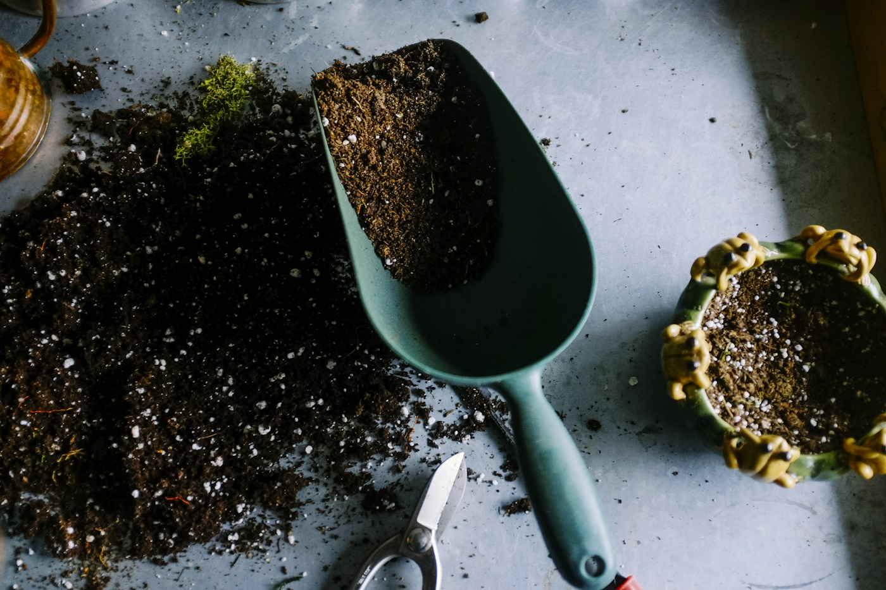

GROUNDS MAINTENANCE · LAWNCARE
More garden.
Less weekend work.
Garden and grounds care for Island homes and businesses.
Try a garden enquiry
Keep your outdoors cared for.
Lawncare, grasscutting and grounds maintenance, with a straightforward first enquiry.
Domestic & commercial work
Isle of Wight
GIVE IT A TRY
What does your garden need?
Demo only. Use fictional details; nothing is sent or saved.